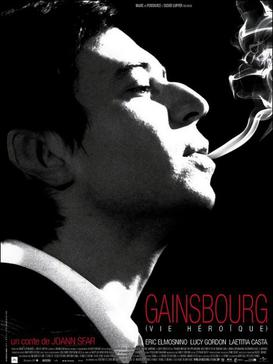

Gainsbourg: A Heroic Life

Joann Sfar
2010
130 minutes
Wikipedia link
IMDB link
TV Tropes link
This is text.
Time to choose something different:
- Gotta admit I'm a sucker for a film with a funny-looking protagonist. - Turn to section 183
- But sometimes it's great when the very gay director just uses the prettiest dude he could find! - Turn to section 146
- Actually, I kinda feel like just putting a couple of Serge Gainsbourg albums on and listening to those for a few hours. Got any silent films I could watch while I do that? - Turn to section 135